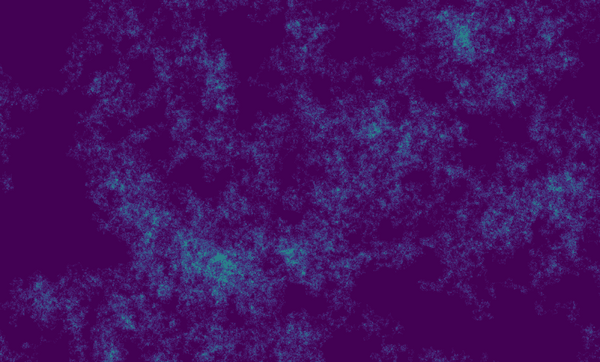

DESCRIPTION
r.random.walk generates a 2D random walk arcoss the current computational region.
The module provides control of the number of steps and directions (4 or 8) the walker
can take, and allows the walkers behavior to be set to revisit or self-avoiding
walk (Madras et al., 1996). The output displays the frequency the walker visited each cell
if the walker is allowed to revisit cells. The module also allows for multiple walks to run and
averaged together.

Difference between fixed overlap width and spatially variable overlap.
SEE ALSO
r.surf.fractal,
r.surf.random
AUTHOR
Corey T. White, NCSU OSGeoREL